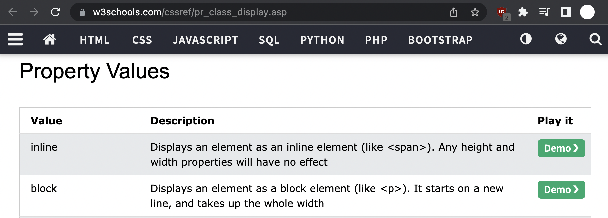
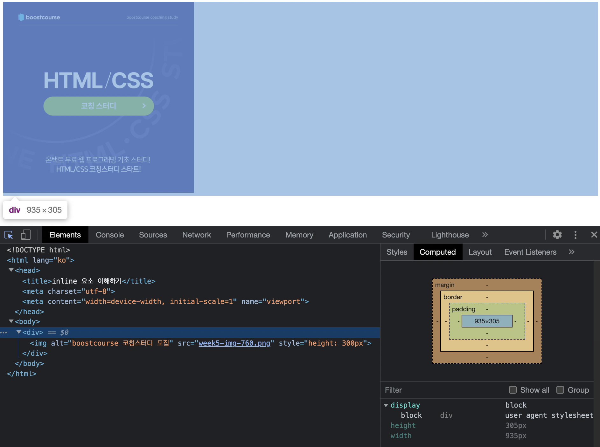
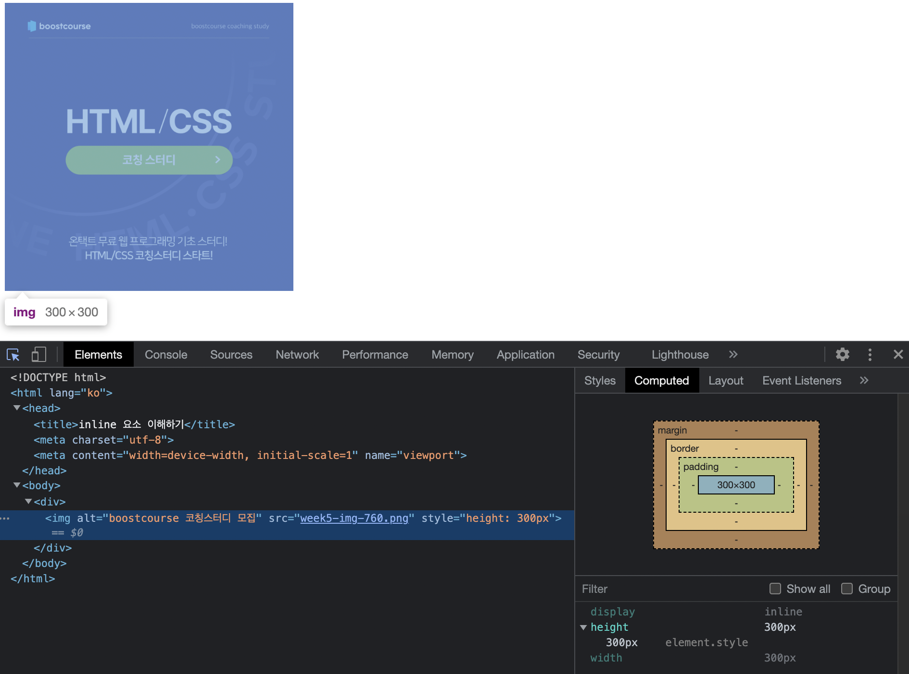

inline 레벨 요소와 block 레벨 요소(display)
[문제 예제코드](수정 전)
[해설]
-
img태그는 inline 레벨 요소로서, block 레벨 요소인 div태그 안에 있음
-
인라인 레벨 요소는 너비의 영향을 받지 않고,
블록 레벨 요소는 앞
전에 학습했듯이 한 행을 가득 채움

-
블럭 레벨 요소 하위의 인라인 레벨 요소는
마치 '한글같은
워드프로세서에서 이미지를 글자로 취급하듯이'
글자처럼 다루기 때문에 나머지 영역은 블럭 레벨 요소의 특성대로
한 줄의 나머지 영역을 공백으로 취급하는 것으로 판단됨
-
div 요소의 computed 값: img

-
img 요소의 computed 값: img

[해결방안](div의 크기도 같게!)
우선순위 설정은 순전히 개인 취향
-
div의 스타일 속성에 'line-height: 0%;'설정
img의 스타일 속성에 'display: inline-block;'설정(불필요함)
cf. 이미지에 inline-block; 만 줬더니, 5px이 차이나서 글자취급을 한다는
점에 착안,
아예 줄높이를 없애니 되었습니다.
'font-size: 0%'도 생각해봤는데, 글자가 있는건 아니니 여백
측면에서만 접근
'height: 500px'는 작위적이라 구미가
당기질 않네요
왜 disply: inlink-block; 을 주면 5px이 굳이 남는 걸까요??????
-
img의 스타일 속성에 'flex'나 'grid', 'block' 속성 적용
(셋 다 블럭 레벨 요소, 참조:
MDN)